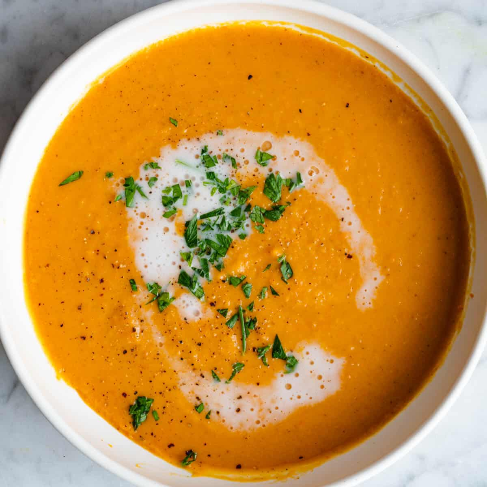

Sweet Potato Soup

Description:
Sweet Potato is best served with brocoli, especially when you're too bored with chemical sugar.
Ingredients:
- ¼ cup butter
- 1 butternut squash - peeled, seeded, and cut into chunks
- 1 sweet potato, peeled and cut into chunks
- 1 carrot, peeled and chopped
- 1 stalk celery, chopped
- 1 sweet onion, chopped
- 2 cloves garlic, minced, or more to taste
- 4 cups chicken stock, or as needed
- 3 small sweet bell peppers, chopped
- salt and ground black pepper to taste
Steps:
- Melt butter in a large pot over medium-high heat. Cook and stir butternut squash, sweet potato, carrot, celery, onion, and garlic in hot butter until lightly browned, about 5 minutes.
- Pour chicken stock and sweet bell peppers into butternut squash mixture; bring to a boil. Reduce heat to low, cover, and simmer until squash and potato are tender, about 40 minutes.
- Pour squash mixture into a blender no more than half full. Cover and hold lid down; pulse a few times before leaving on to blend. Puree in batches until smooth.
- Return pureed soup to pot and season with salt and black pepper.